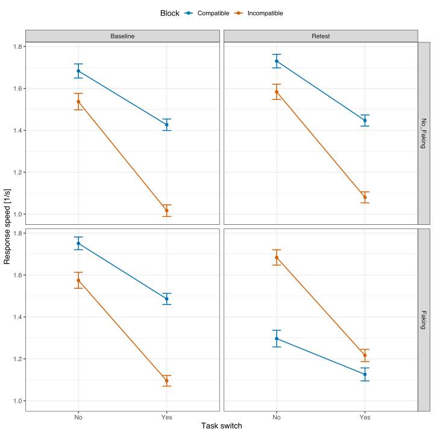
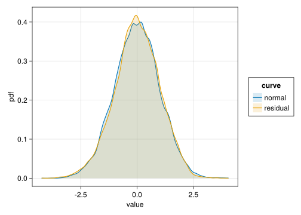
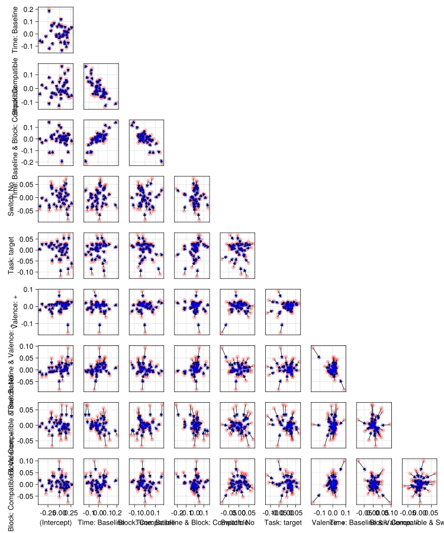

using AlgebraOfGraphics
using Arrow
using CairoMakie # graphics back-end
using CategoricalArrays
using Chain
using DataFrames
using DataFrameMacros # simplified dplyr-like data wrangling
using KernelDensity # density estimation
using MixedModels
using MixedModelsMakie # diagnostic plots
if contains(first(Sys.cpu_info()).model, "Intel")
using MKL # faster LAPACK on Intel processors
end
using ProgressMeter
using Random # random number generators
using RCall # call R from Julia
using StatsModels
using AlgebraOfGraphics: boxplot
using AlgebraOfGraphics: density
using MixedModelsMakie: qqnorm
using MixedModelsMakie: ridgeplot
using MixedModelsMakie: scatter
using MixedModelsMakie: caterpillar
ProgressMeter.ijulia_behavior(:clear);
CairoMakie.activate!(; type="svg");Anke Cajar: Detecting Faked IATs via Task-Switch Costs
RePsychLing in SMLP2022
Background
Overview
- Original analysis is by Anke Cajar.
- Data are from André Krügel.
- Revisions do not affect the main conclusion, but highlight common problems with fitting LMMs related to
- contrast specification
- convergence issue
- zero correlation parameters
- Addition of new chunks illustrate
- selection of parsimonious LMM using random-effects PCA
- plotting conditional means
- illustration of borrowing strength
Anke Cajar: Analysis/modeling issues
- Is the contrast coding appropriate?
- What is currently the best method for model selection (concerning questions like: from maximal to minimal model, doing rePCA, …)? Is the stuff from the RePsychLing package and vignettes still the way to do it?
- How do I make sure that the random effects structure of my selected model is really supported by the data (again, rePCA?)?
- How do I decide which optimizer to use for model fitting? I heard bobyqa is supposed to be good…
- It seems that the order in which I put the factors in the formula changes the outcome. How do I decide on the order (most important factor first, than second etc.?)?
- Model results (model 13) don’t really fit the mean response time/switch costs plot, as part of the effects you see in the figure goes into the random effects (By chance, there were more older subjects > 45 years in the no-faking group, who had considerably longer mean response times in the baseline IAT). How do I report this in a paper? Should I plot the fixed effects from the model instead of mean response times (which I’d rather not)?
Data
This is data from an experiment showing that we can reliably detect whether outcomes from the Implicit Association Test (IAT) are faked by analysing task-switch costs in the combined blocks of the IAT (see next paragraph) Every participant performed two IATs: the control group performed the same normative IAT twice and the faking group was instructed to fake the second IAT by deliberately slowing down response times in the compatible block. It has been shown that switches from a target-concept word to an attribute-dimension word between consecutive trials produces stronger switch costs (i.e., response-time differences between task-repetition and task-switch trials) in the incompatible block than in the compatible block. The present data show that even after successful faking of the IAT, these switch costs are preserved (although the true compatible block became the faked incompatible block). Thus, switch costs can be used to detect IAT faking reliably and with high accuracy.
IAT and faking strategies
The IAT measures people’s implicit associations between a target concept and an attribute dimension. People have to assign consecutively presented words as fast as possible to one of four categories—two categories belong to the target concept (e.g., family vs career words) and two categories belong to the attribute dimension (e.g., male vs female words). When strongly associated concepts share the same response key in the categorization task (e.g., career and male words or family and female words), response times are usually shorter than when less associated concepts share the same response key (e.g., career and female words or family and male words). The IAT block with shorter response times is called the compatible block, whereas the block with longer response times is called the incompatible block. IAT results can be deliberately faked, most easily and reliably by slowing down response times in the actual compatible block (making it look like the incompatible block and thus reversing associations). To date, an effective and accurate method for detecting faked IATs is still missing.
Background and overview
- Data are from André Krügel.
- Revisions and additions for SMLP2022 by Reinhold Kliegl (RK)
- Revisions do not affect the main conclusion, but highlight common problems with fitting LMMs related to
- contrast specification
- convergence issue
- zero correlation parameters
- Addition of new chunks illustrate
- selection of parsimonious LMM using random-effects PCA (
rePCA()) and LRTs (anova()) - plotting partial effect of high-order interaction (
remef()) - plotting conditional means
- selection of parsimonious LMM using random-effects PCA (
Data
This is data from an experiment showing that we can reliably detect whether outcomes from the Implicit Association Test (IAT) are faked by analysing task-switch costs in the combined blocks of the IAT (see next paragraph) Every participant performed two IATs: the control group performed the same normative IAT twice and the faking group was instructed to fake the second IAT by deliberately slowing down response times in the compatible block. It has been shown that switches from a target-concept word to an attribute-dimension word between consecutive trials produces stronger switch costs (i.e., response-time differences between task-repetition and task-switch trials) in the incompatible block than in the compatible block. The present data show that even after successful faking of the IAT, these switch costs are preserved (although the true compatible block became the faked incompatible block). Thus, switch costs can be used to detect IAT faking reliably and with high accuracy.
IAT and faking strategies
The IAT measures people’s implicit associations between a target concept and an attribute dimension. People have to assign consecutively presented words as fast as possible to one of four categories—two categories belong to the target concept (e.g., family vs career words) and two categories belong to the attribute dimension (e.g., male vs female words). When strongly associated concepts share the same response key in the categorization task (e.g., career and male words or family and female words), response times are usually shorter than when less associated concepts share the same response key (e.g., career and female words or family and male words). The IAT block with shorter response times is called the compatible block, whereas the block with longer response times is called the incompatible block. IAT results can be deliberately faked, most easily and reliably by slowing down response times in the actual compatible block (making it look like the incompatible block and thus reversing associations). To date, an effective and accurate method for detecting faked IATs is still missing.
Readme
Design (almost balanced)
- Design: 2 (B-Subj/W-Item) x 2 (W) x 2 (W) x 2 (W) factorial mixed design
- N trials: 38 Subj x 20 Item x 8 W-Item x 2 repetition of items = 12160
- N errors: 391 (3.2%)
- N observations: 12160-391=11769
Variables
Subj: Participant ID (renamed fromID; random factor)Item: Word ID (random factor)Group(between-Subj/within-Item):- No_Faking: control group, where people took the same normative IAT twice
- Faking: experimental group, where people were instructed to fake the retest IAT by slowing down response times in the compatible block
Time(within-Subj/within-Item):- Baseline: first IAT (normative IAT)
- Retest: second IAT (normative or faked, depending on Group)
Block(within-Subj/within-Item):- Compatible: IAT combined block with shorter response times
- Incompatible: IAT combined block with longer response times
Switch(renamed fromTaskSwitch; within-Subj/within-Item):- Yes: Switch from target concept to attribute dimension (or the other way around) from one trial to the next
- No: No switch from target concept to attribute dimension (or the other way around) from one trial to the next
rt: trial response time (DV, renamed fromRT)
Setup
First attach the MixedModels.jl package and other packages for plotting. The CairoMakie.jl package allows the Makie graphics system [@Danisch2021] to generate high quality static images. Activate that package with the SVG (Scalable Vector Graphics) backend.
- The data are available as an arrow file.
- Most of preprocessing was done with R in RStudio.
- Order of factor levels should be checked.
dat = DataFrame(Arrow.Table("../participants/cajar/data/Cajar_IAT.arrow"))
transform!(dat,
:Task => categorical => :Task,
:Valence => categorical => :Valence,
:Group => categorical => :Group,
:Time => categorical => :Time,
:Block => categorical => :Block,
:Switch => categorical => :Switch,
:rt => (x -> 1000 ./ x) => :speed)
levels!(dat.Group, ["No_Faking", "Faking"])
describe(dat)13 rows × 7 columns
| variable | mean | min | median | max | nmissing | eltype | |
|---|---|---|---|---|---|---|---|
| Symbol | Union… | Any | Union… | Any | Int64 | Type | |
| 1 | Subj | S001 | S156 | 0 | Union{Missing, String} | ||
| 2 | Gender | female | male | 0 | Union{Missing, String} | ||
| 3 | age | 31.8873 | 18.0 | 26.0 | 68.0 | 0 | Union{Missing, Float64} |
| 4 | Item | I01 | I20 | 0 | Union{Missing, String} | ||
| 5 | Word | FLIEDER | Wohlbefinden | 0 | Union{Missing, String} | ||
| 6 | Task | attribute | target | 0 | Union{Missing, CategoricalValue{String, UInt32}} | ||
| 7 | Valence | + | - | 0 | Union{Missing, CategoricalValue{String, UInt32}} | ||
| 8 | Group | No_Faking | Faking | 0 | Union{Missing, CategoricalValue{String, UInt32}} | ||
| 9 | Time | Baseline | Retest | 0 | Union{Missing, CategoricalValue{String, UInt32}} | ||
| 10 | Block | Compatible | Incompatible | 0 | Union{Missing, CategoricalValue{String, UInt32}} | ||
| 11 | Switch | No | Yes | 0 | Union{Missing, CategoricalValue{String, UInt32}} | ||
| 12 | rt | 845.18 | 400 | 711.0 | 9003 | 0 | Union{Missing, Int32} |
| 13 | speed | 1.40485 | 0.111074 | 1.40647 | 2.5 | 0 | Float64 |
- Always check factor levels! In this case levels of
Groupneeded to be reverted. - Note: Factor levels can also be set when contrasts are defined (see below).
- BoxCox check showed that reaction time
RT[ms] should be transformed tospeed[1/s] = [Hz]
Plot of 4-factor interaction
The plot shows the critical interaction. Note the different profile of means for the Retest-Faking facet.
RCall.ijulia_setdevice(MIME("image/svg+xml"); width=10, height=10.0)
@rput dat;
#R"summary(dat)"
R"""
suppressWarnings(suppressMessages(library(tidyverse)))
# respecting color vision deficiency
cbPalette <- c( "#0072B2", "#D55E00", "#009E73", "#CC79A7",
"#F0E442", "#56B4E9", "#999999", "#E69F00")
switch_costs <- dat |>
group_by(Time, Group, Block, Switch) |>
summarise(M = mean(speed), SD=sd(speed), N=n(), SE=SD/sqrt(N))
fig_speed <-
switch_costs |>
ggplot(aes(x=Switch, y=M, color=Block)) +
geom_point(size=2) +
geom_line(size=0.7, aes(group=Block)) +
geom_errorbar(aes(ymin=M-2*SE, ymax=M+2*SE), width=.1, size=0.7) +
scale_color_manual("Block", values=cbPalette) +
facet_grid(Group~Time) +
labs(x="Task switch", y="Response speed [1/s]") +
theme_bw(base_size=13) + theme(legend.position = "top")
print(fig_speed)
""";┌ Warning: RCall.jl: `summarise()` has grouped output by 'Time', 'Group', 'Block'. You can override
│ using the `.groups` argument.
└ @ RCall /Users/reinholdkliegl/.julia/packages/RCall/6kphM/src/io.jl:172
LMM analysis
Fixed effects
A few comments on the choice of fixed effects.
+ The first task is to make sure that the fixed effects represent the hypotheses we intend to test. This is usually implemented with contrasts for factors and polynomial degrees for covariates.
+ The second taks to decide on the degree of the highest-order interaction. If there is a distinction between theoretically motivated and control (e.g., counterbalancing) factors, include interactions for the former.
+ In (close to) counterbalanced design, leaving high-order interaction(s) of theoretically motivated factors in the model does not cause any problems. However, we consider it unlikely that interpretations of interactions between, say, five and more factors are interpretable.
+ In observational studies with a combination of (quasi-)experimental factors and correlated covariates, it is important to eliminate non-significant higher-order interaction terms involving covariates. Their correlations with lower-order terms may render important main effects or simple interactions non-significant (i.e., cause false negative errors).
+ During model selection with respect to the complexity of the RES, the significance of fixed effects must not be considered. Therefore, after we decide on a defensible fixed-effect structure, we only use `VarCorr(model)` to facilitate model selection.
+ Here we keep the full 2^6 factorial design in the fixed effects during model selection. We prune some of the higher-order fixed-effect interaction terms only after model selection.Contrasts
For this experiment, we use effect coding for six fixed two-level factors. As this is an almost balanced design, the specification yields an almost orthognal set of test statistics for main effects and interactions. EffectsCoding() corresponds to contr.sum in R, but by default it uses the first level as base. To obtain the same direction of effects as in R, the base is changed to the second factor level for all of them.
Random factors, here Subj and Item, are also called grouping variables. Grouping() declares them as such.
For this contrast specification, the LMM returns estimates for three (Intercept) parameters. They refer to the Grand Mean (GM) and associated GM for Subj-related and Item-related VCs in the random-effect structure (RES), respectively.
contrasts = merge(
Dict(:Group => EffectsCoding(base= "Faking"; levels=["No_Faking", "Faking"])),
Dict(:Time => EffectsCoding(base= "Retest"; levels=["Baseline", "Retest"])),
Dict(:Block => EffectsCoding(base= "Incompatible"; levels=["Compatible", "Incompatible"])),
Dict(:Switch => EffectsCoding(base= "Yes"; levels=["No", "Yes"])),
Dict(:Task => EffectsCoding(base= "attribute"; levels=["target", "attribute"])),
Dict(:Valence => EffectsCoding(base= "-"; levels=["+", "-"])),
# Dict(nm => EffectsCoding(; base=) for nm in (:Group, :Time, :Block, :Switch, :Task, :Valence)),
Dict(nm => Grouping() for nm in (:Subj, :Item))
);A maximal LMM m_max
This is a didactic exercise, not part of the usual workflow.
We start w/ estimation of the maximal number of fixed effects (2^6 = 64 terms) and their corresponding VCs and CPs for Subj and for Item grouping variables, that is we estimate variance components (VCs) and correlation parameters (CPs) for within-subject factors for Subj (i.e., 2^5 = 32 VCs and 32 x 31 /2 = 496 CPs) and for within-item factors for Item (i.e., 2^4 = 16 VCs and 16 x 15 /2 = 120 CPs), plus the observation-level residual variance. Thus, 64+(32+496)+(16+120)+1=729 model parameters are estimated from 11679 observations. Given 38 subjects and 20 items, there are also 38 subject x 32 parameters + 20 items x 16 parameters = 1536 conditional means of the random effects for the two random factors.
As far as the experimental design is concerned, this is the maximal LMM. Note, however, that we do not include covariates such as trial number, age of subjects, or word frequency. These covariates could also be modelled with higher-order polynomial trends. Thus, in principle, there is not really a maximal LMM for an experiment. Explicitly or implicitly, we are always deciding on an upper limit.
Random-effect structure
We need to arrive at a representation that is supported by the data. Unfortunatey, to our knowledge, there is no algorithmic solution. As we show next, MixedModels.jl allows the estimation of the design-maximal LMM, but the solution will be a degenerate, highly overparameterized model object.
Fit LMM m_max
f_max = @formula(speed ~ 1 + Group*Time*Block*Switch*Task*Valence +
(1 + Time*Block*Switch*Task*Valence | Subj) +
(1 + Group*Time*Block*Switch | Item));m_max = fit(MixedModel, f_max, dat; contrasts);
saveoptsum("./fits/cajar_iat_max_optsum.json", m_max);We save the fitted model object, because a model of this complexity takes some time to fit – also with Julia MixedModels.jl. Specifically, for a Macbook Pro M1 Max: Minimizing 92709 Time: 0 Time: 5:00:40
Restore fitted model object
m_max = LinearMixedModel(f_max, dat; contrasts=contrasts);
restoreoptsum!(m_max, "./fits/cajar_iat_max_optsum.json");
n, p, q, k = size(m_max)(11769, 64, 1536, 2)Examine model fit
We check whether the model, specifically the variance-covariance matrix of the random factors / grouping variables is supported by the data with two commands:
- Is the variance-covariance matrix (VCM) singular?
issingular(m_max)trueThe variance-covariance matrix of the RES is singular.
- We check the number of Subj- and Item-related principal components (PCs)
m_max.PCA[:Subj] # also: MixedModels.PCA(m0)[:Subj]
Principal components based on correlation matrix
(Intercept) … . . . . .
Time: Baseline . . . . .
Block: Compatible . . . . .
Time: Baseline & Block: Compatible . . . . .
Switch: No . . . . .
Time: Baseline & Switch: No … . . . . .
Block: Compatible & Switch: No . . . . .
Time: Baseline & Block: Compatible & Switch: No . . . . .
Task: target . . . . .
Time: Baseline & Task: target . . . . .
Block: Compatible & Task: target … . . . . .
Time: Baseline & Block: Compatible & Task: target . . . . .
Switch: No & Task: target . . . . .
⋮ ⋱ ⋮
Switch: No & Valence: + … . . . . .
Time: Baseline & Switch: No & Valence: + . . . . .
Block: Compatible & Switch: No & Valence: + . . . . .
Time: Baseline & Block: Compatible & Switch: No & Valence: + . . . . .
Task: target & Valence: + . . . . .
Time: Baseline & Task: target & Valence: + … . . . . .
Block: Compatible & Task: target & Valence: + . . . . .
Time: Baseline & Block: Compatible & Task: target & Valence: + 1.0 . . . .
Switch: No & Task: target & Valence: + -0.35 1.0 . . .
Time: Baseline & Switch: No & Task: target & Valence: + -0.6 0.15 1.0 . .
Block: Compatible & Switch: No & Task: target & Valence: + … -0.38 0.11 0.4 1.0 .
Time: Baseline & Block: Compatible & Switch: No & Task: target & Valence: + 0.55 -0.68 -0.31 -0.13 1.0
Normalized cumulative variances:
[0.1848, 0.3532, 0.4731, 0.5821, 0.6727, 0.7504, 0.8118, 0.8629, 0.9023, 0.9347 … 1.0, 1.0, 1.0, 1.0, 1.0, 1.0, 1.0, 1.0, 1.0, 1.0]
Component loadings
… PC29 PC30 PC31 PC32
(Intercept) -0.38 -0.35 -0.08 -0.23
Time: Baseline -0.28 -0.12 -0.39 -0.13
Block: Compatible 0.05 -0.18 0.03 0.03
Time: Baseline & Block: Compatible 0.24 -0.43 0.31 0.13
Switch: No … 0.09 -0.26 0.23 0.03
Time: Baseline & Switch: No -0.16 0.1 -0.03 0.47
Block: Compatible & Switch: No -0.2 -0.31 -0.04 0.16
Time: Baseline & Block: Compatible & Switch: No 0.0 0.09 -0.02 -0.47
Task: target -0.06 -0.06 -0.14 0.27
Time: Baseline & Task: target … -0.05 -0.18 0.04 -0.21
Block: Compatible & Task: target 0.12 -0.0 -0.05 0.19
Time: Baseline & Block: Compatible & Task: target -0.13 -0.0 -0.1 0.54
⋮ ⋱ ⋮
Switch: No & Valence: + -0.1 -0.05 -0.22 0.0
Time: Baseline & Switch: No & Valence: + -0.19 0.04 0.09 -0.0
Block: Compatible & Switch: No & Valence: + 0.23 -0.02 -0.32 0.0
Time: Baseline & Block: Compatible & Switch: No & Valence: + -0.19 -0.02 0.21 -0.0
Task: target & Valence: + … -0.04 -0.02 0.12 -0.0
Time: Baseline & Task: target & Valence: + -0.08 0.02 0.12 -0.0
Block: Compatible & Task: target & Valence: + 0.12 0.07 -0.26 0.0
Time: Baseline & Block: Compatible & Task: target & Valence: + 0.02 0.07 0.11 -0.0
Switch: No & Task: target & Valence: + -0.01 -0.01 0.2 -0.0
Time: Baseline & Switch: No & Task: target & Valence: + … 0.37 0.04 -0.01 0.0
Block: Compatible & Switch: No & Task: target & Valence: + 0.35 0.05 -0.01 0.0
Time: Baseline & Block: Compatible & Switch: No & Task: target & Valence: + 0.01 -0.03 0.0 -0.0m_max.PCA[:Item] # also: MixedModels.PCA(m_max)[:Subj]
Principal components based on correlation matrix
(Intercept) … . . . . .
Group: No_Faking . . . . .
Time: Baseline . . . . .
Group: No_Faking & Time: Baseline . . . . .
Block: Compatible . . . . .
Group: No_Faking & Block: Compatible … . . . . .
Time: Baseline & Block: Compatible . . . . .
Group: No_Faking & Time: Baseline & Block: Compatible . . . . .
Switch: No . . . . .
Group: No_Faking & Switch: No . . . . .
Time: Baseline & Switch: No … . . . . .
Group: No_Faking & Time: Baseline & Switch: No 1.0 . . . .
Block: Compatible & Switch: No -0.19 1.0 . . .
Group: No_Faking & Block: Compatible & Switch: No -0.75 -0.2 1.0 . .
Time: Baseline & Block: Compatible & Switch: No -0.77 -0.02 0.75 1.0 .
Group: No_Faking & Time: Baseline & Block: Compatible & Switch: No … -0.86 0.4 0.46 0.37 1.0
Normalized cumulative variances:
[0.3925, 0.6047, 0.8091, 0.9753, 0.9998, 1.0, 1.0, 1.0, 1.0, 1.0, 1.0, 1.0, 1.0, 1.0, 1.0, 1.0]
Component loadings
… PC13 PC14 PC15 PC16
(Intercept) 0.24 0.07 0.02 -0.62
Group: No_Faking -0.04 -0.06 -0.03 0.03
Time: Baseline 0.19 -0.04 -0.48 0.22
Group: No_Faking & Time: Baseline -0.17 -0.03 -0.04 0.26
Block: Compatible … 0.07 -0.07 0.01 -0.16
Group: No_Faking & Block: Compatible 0.17 0.09 -0.38 0.22
Time: Baseline & Block: Compatible -0.18 0.13 0.16 0.2
Group: No_Faking & Time: Baseline & Block: Compatible -0.11 -0.1 -0.33 -0.59
Switch: No 0.45 -0.26 -0.08 0.21
Group: No_Faking & Switch: No … 0.05 0.24 -0.63 -0.01
Time: Baseline & Switch: No -0.61 0.04 -0.19 0.0
Group: No_Faking & Time: Baseline & Switch: No -0.23 0.59 -0.08 0.0
Block: Compatible & Switch: No 0.09 -0.04 -0.03 0.0
Group: No_Faking & Block: Compatible & Switch: No -0.11 -0.14 -0.03 -0.0
Time: Baseline & Block: Compatible & Switch: No … 0.19 0.12 0.02 0.0
Group: No_Faking & Time: Baseline & Block: Compatible & Switch: No 0.33 0.66 0.2 0.0Almost all of information in this matrix (>99.8%) can be recoverd with a smaller number of Subj-related and Item-related PCs (i.e., weighted composites of the VCs).
The statistics show the overparameterization of the Subj and Item parts of the random-effect structure (RES). The variance-covariance matrix usually provides hints about sources of the problem. Specifically, we look for the smallest variance components (VCs) and implausible correlation parameters (CPs; i.e., 1.0). Such VCs are CPs are candidates for removal in the next iteration. VCs of interaction terms are also likely candidates.
VarCorr(m_max)| Column | Variance | Std.Dev | Corr. | |||||||||||||||||||||||||||||||
|---|---|---|---|---|---|---|---|---|---|---|---|---|---|---|---|---|---|---|---|---|---|---|---|---|---|---|---|---|---|---|---|---|---|---|
| Subj | (Intercept) | 0.02657044 | 0.16300442 | |||||||||||||||||||||||||||||||
| Time: Baseline | 0.00478327 | 0.06916117 | -0.01 | |||||||||||||||||||||||||||||||
| Block: Compatible | 0.00393039 | 0.06269281 | +0.19 | -0.75 | ||||||||||||||||||||||||||||||
| Time: Baseline & Block: Compatible | 0.00409510 | 0.06399297 | -0.04 | +0.79 | -0.78 | |||||||||||||||||||||||||||||
| Switch: No | 0.00105425 | 0.03246925 | -0.01 | +0.18 | -0.02 | -0.17 | ||||||||||||||||||||||||||||
| Time: Baseline & Switch: No | 0.00014039 | 0.01184847 | +0.01 | +0.51 | -0.32 | +0.35 | +0.07 | |||||||||||||||||||||||||||
| Block: Compatible & Switch: No | 0.00051888 | 0.02277900 | +0.04 | -0.49 | +0.26 | -0.59 | -0.03 | -0.43 | ||||||||||||||||||||||||||
| Time: Baseline & Block: Compatible & Switch: No | 0.00041985 | 0.02049014 | -0.34 | +0.52 | -0.45 | +0.31 | +0.29 | +0.54 | -0.08 | |||||||||||||||||||||||||
| Task: target | 0.00138586 | 0.03722717 | -0.25 | +0.15 | -0.26 | +0.38 | -0.11 | +0.06 | -0.41 | +0.14 | ||||||||||||||||||||||||
| Time: Baseline & Task: target | 0.00023461 | 0.01531710 | -0.12 | -0.41 | +0.18 | -0.08 | -0.56 | -0.22 | +0.09 | -0.35 | -0.10 | |||||||||||||||||||||||
| Block: Compatible & Task: target | 0.00029311 | 0.01712051 | +0.19 | -0.13 | +0.22 | -0.06 | -0.01 | -0.17 | +0.18 | -0.25 | +0.05 | -0.31 | ||||||||||||||||||||||
| Time: Baseline & Block: Compatible & Task: target | 0.00041493 | 0.02036989 | +0.11 | +0.05 | -0.04 | -0.07 | +0.08 | -0.27 | +0.20 | +0.23 | -0.49 | +0.28 | -0.57 | |||||||||||||||||||||
| Switch: No & Task: target | 0.00007826 | 0.00884628 | -0.41 | -0.02 | +0.11 | -0.29 | +0.14 | -0.11 | +0.15 | +0.15 | -0.11 | -0.50 | +0.18 | -0.14 | ||||||||||||||||||||
| Time: Baseline & Switch: No & Task: target | 0.00031393 | 0.01771795 | +0.17 | -0.06 | +0.10 | -0.00 | -0.33 | -0.11 | -0.06 | -0.05 | +0.19 | +0.56 | -0.49 | +0.44 | -0.59 | |||||||||||||||||||
| Block: Compatible & Switch: No & Task: target | 0.00016357 | 0.01278949 | -0.41 | +0.11 | -0.06 | +0.03 | +0.13 | +0.66 | -0.39 | +0.36 | +0.24 | -0.25 | +0.10 | -0.55 | +0.11 | -0.30 | ||||||||||||||||||
| Time: Baseline & Block: Compatible & Switch: No & Task: target | 0.00009833 | 0.00991633 | +0.17 | -0.32 | +0.64 | -0.51 | +0.35 | -0.51 | +0.22 | -0.14 | -0.22 | -0.13 | +0.25 | +0.29 | +0.22 | +0.08 | -0.31 | |||||||||||||||||
| Valence: + | 0.00108755 | 0.03297798 | +0.12 | -0.12 | +0.08 | -0.20 | +0.19 | -0.29 | +0.13 | -0.40 | +0.16 | -0.00 | -0.23 | -0.09 | -0.14 | +0.27 | -0.33 | +0.19 | ||||||||||||||||
| Time: Baseline & Valence: + | 0.00067645 | 0.02600862 | +0.42 | +0.41 | -0.17 | +0.29 | -0.14 | +0.33 | -0.12 | +0.27 | -0.01 | -0.38 | +0.48 | -0.11 | +0.04 | -0.10 | +0.11 | -0.08 | -0.60 | |||||||||||||||
| Block: Compatible & Valence: + | 0.00082704 | 0.02875838 | -0.14 | +0.03 | -0.13 | -0.20 | +0.26 | -0.16 | +0.28 | -0.17 | -0.29 | +0.14 | -0.45 | +0.26 | +0.06 | +0.18 | -0.36 | -0.09 | +0.54 | -0.47 | ||||||||||||||
| Time: Baseline & Block: Compatible & Valence: + | 0.00039987 | 0.01999667 | -0.02 | +0.10 | +0.02 | -0.04 | -0.17 | +0.32 | +0.10 | +0.44 | -0.21 | -0.31 | +0.29 | -0.00 | +0.25 | -0.23 | +0.45 | -0.06 | -0.74 | +0.65 | -0.54 | |||||||||||||
| Switch: No & Valence: + | 0.00020523 | 0.01432602 | +0.12 | -0.17 | -0.04 | -0.10 | -0.32 | -0.28 | +0.42 | -0.41 | -0.39 | -0.08 | +0.12 | -0.08 | +0.34 | -0.44 | -0.35 | -0.24 | +0.13 | -0.10 | +0.19 | -0.01 | ||||||||||||
| Time: Baseline & Switch: No & Valence: + | 0.00011643 | 0.01079012 | +0.03 | +0.15 | +0.34 | -0.11 | +0.13 | -0.10 | -0.19 | +0.13 | -0.10 | -0.32 | +0.02 | +0.23 | +0.48 | +0.06 | -0.16 | +0.45 | -0.23 | +0.35 | +0.00 | +0.20 | -0.14 | |||||||||||
| Block: Compatible & Switch: No & Valence: + | 0.00018264 | 0.01351430 | +0.06 | +0.15 | -0.15 | +0.06 | -0.09 | +0.02 | +0.22 | +0.01 | -0.68 | +0.12 | -0.16 | +0.42 | +0.24 | -0.21 | -0.38 | -0.21 | -0.33 | +0.14 | +0.43 | +0.07 | +0.48 | +0.25 | ||||||||||
| Time: Baseline & Block: Compatible & Switch: No & Valence: + | 0.00007305 | 0.00854691 | -0.13 | +0.06 | +0.02 | -0.01 | -0.38 | +0.27 | +0.19 | +0.15 | -0.42 | +0.15 | -0.34 | +0.21 | +0.22 | -0.13 | +0.00 | -0.34 | -0.30 | -0.02 | +0.05 | +0.32 | +0.50 | +0.08 | +0.53 | |||||||||
| Task: target & Valence: + | 0.00025664 | 0.01602008 | +0.05 | +0.07 | -0.37 | +0.30 | -0.10 | -0.22 | -0.01 | +0.23 | +0.19 | +0.07 | -0.35 | +0.45 | -0.17 | +0.29 | -0.39 | +0.03 | +0.19 | -0.17 | -0.05 | -0.20 | -0.02 | -0.19 | -0.08 | -0.25 | ||||||||
| Time: Baseline & Task: target & Valence: + | 0.00030471 | 0.01745599 | +0.04 | +0.08 | +0.17 | -0.17 | +0.24 | +0.12 | +0.15 | +0.25 | -0.42 | -0.27 | -0.20 | +0.30 | +0.47 | -0.29 | -0.18 | +0.05 | -0.30 | +0.13 | +0.22 | +0.17 | +0.25 | +0.60 | +0.66 | +0.59 | -0.27 | |||||||
| Block: Compatible & Task: target & Valence: + | 0.00022766 | 0.01508836 | +0.10 | +0.08 | +0.27 | -0.22 | +0.60 | -0.22 | +0.02 | -0.01 | -0.05 | -0.08 | +0.01 | +0.24 | -0.11 | +0.31 | -0.25 | +0.66 | +0.39 | -0.12 | +0.39 | -0.38 | -0.54 | +0.36 | -0.15 | -0.48 | -0.14 | +0.04 | ||||||
| Time: Baseline & Block: Compatible & Task: target & Valence: + | 0.00020699 | 0.01438700 | -0.43 | -0.02 | -0.06 | +0.36 | -0.47 | -0.03 | -0.22 | +0.05 | +0.55 | +0.34 | +0.34 | -0.37 | -0.09 | +0.03 | +0.23 | -0.06 | -0.25 | +0.01 | -0.53 | +0.05 | -0.27 | -0.19 | -0.39 | -0.14 | +0.06 | -0.48 | -0.20 | |||||
| Switch: No & Task: target & Valence: + | 0.00033108 | 0.01819557 | +0.34 | +0.04 | -0.03 | -0.16 | -0.02 | -0.15 | +0.31 | -0.40 | -0.50 | +0.16 | -0.05 | +0.21 | -0.30 | +0.19 | -0.28 | +0.11 | +0.49 | -0.17 | +0.40 | -0.16 | +0.28 | -0.37 | +0.07 | +0.02 | -0.05 | -0.32 | +0.20 | -0.35 | ||||
| Time: Baseline & Switch: No & Task: target & Valence: + | 0.00024684 | 0.01571119 | +0.43 | -0.11 | +0.18 | -0.24 | -0.05 | +0.11 | +0.19 | -0.21 | -0.62 | -0.06 | -0.16 | +0.21 | +0.16 | -0.30 | -0.21 | -0.15 | -0.17 | +0.10 | +0.09 | +0.14 | +0.61 | +0.10 | +0.58 | +0.67 | -0.27 | +0.65 | -0.34 | -0.60 | +0.15 | |||
| Block: Compatible & Switch: No & Task: target & Valence: + | 0.00009454 | 0.00972301 | +0.56 | +0.48 | -0.24 | +0.22 | +0.02 | +0.35 | +0.17 | +0.42 | -0.23 | -0.46 | +0.01 | +0.25 | +0.03 | -0.02 | -0.24 | -0.03 | -0.14 | +0.61 | -0.13 | +0.37 | +0.18 | +0.21 | +0.28 | +0.32 | +0.16 | +0.40 | -0.07 | -0.38 | +0.11 | +0.40 | ||
| Time: Baseline & Block: Compatible & Switch: No & Task: target & Valence: + | 0.00032120 | 0.01792210 | -0.58 | +0.28 | -0.09 | +0.33 | -0.03 | +0.26 | -0.33 | +0.38 | +0.56 | -0.17 | +0.07 | -0.41 | +0.38 | -0.20 | +0.32 | -0.12 | -0.17 | -0.00 | -0.18 | -0.03 | -0.22 | +0.32 | -0.13 | +0.15 | -0.21 | +0.23 | -0.01 | +0.55 | -0.68 | -0.31 | -0.13 | |
| Item | (Intercept) | 0.00040230 | 0.02005738 | |||||||||||||||||||||||||||||||
| Group: No_Faking | 0.00003972 | 0.00630205 | +0.13 | |||||||||||||||||||||||||||||||
| Time: Baseline | 0.00004273 | 0.00653657 | +0.47 | -0.08 | ||||||||||||||||||||||||||||||
| Group: No_Faking & Time: Baseline | 0.00001076 | 0.00327985 | +0.42 | -0.83 | +0.18 | |||||||||||||||||||||||||||||
| Block: Compatible | 0.00027676 | 0.01663604 | -0.03 | +0.07 | +0.59 | -0.21 | ||||||||||||||||||||||||||||
| Group: No_Faking & Block: Compatible | 0.00001921 | 0.00438260 | +0.49 | +0.26 | +0.30 | +0.03 | -0.41 | |||||||||||||||||||||||||||
| Time: Baseline & Block: Compatible | 0.00021833 | 0.01477590 | -0.33 | +0.60 | +0.21 | -0.80 | +0.50 | -0.25 | ||||||||||||||||||||||||||
| Group: No_Faking & Time: Baseline & Block: Compatible | 0.00009752 | 0.00987517 | -0.80 | -0.15 | -0.32 | -0.28 | -0.36 | -0.01 | +0.23 | |||||||||||||||||||||||||
| Switch: No | 0.00011546 | 0.01074503 | -0.55 | +0.17 | -0.86 | -0.33 | -0.70 | -0.14 | +0.07 | +0.65 | ||||||||||||||||||||||||
| Group: No_Faking & Switch: No | 0.00001125 | 0.00335399 | -0.32 | +0.07 | -0.53 | -0.20 | +0.27 | -0.88 | +0.19 | -0.21 | +0.25 | |||||||||||||||||||||||
| Time: Baseline & Switch: No | 0.00006695 | 0.00818201 | +0.23 | +0.20 | +0.68 | -0.14 | +0.01 | +0.65 | +0.36 | +0.25 | -0.24 | -0.82 | ||||||||||||||||||||||
| Group: No_Faking & Time: Baseline & Switch: No | 0.00005172 | 0.00719180 | -0.18 | -0.07 | -0.87 | +0.10 | -0.41 | -0.36 | -0.49 | -0.10 | +0.51 | +0.63 | -0.90 | |||||||||||||||||||||
| Block: Compatible & Switch: No | 0.00023075 | 0.01519048 | -0.66 | -0.74 | +0.09 | +0.26 | +0.19 | -0.43 | +0.01 | +0.61 | +0.02 | -0.01 | +0.01 | -0.19 | ||||||||||||||||||||
| Group: No_Faking & Block: Compatible & Switch: No | 0.00002118 | 0.00460256 | +0.64 | +0.11 | +0.94 | +0.13 | +0.51 | +0.50 | +0.09 | -0.49 | -0.88 | -0.57 | +0.62 | -0.75 | -0.20 | |||||||||||||||||||
| Time: Baseline & Block: Compatible & Switch: No | 0.00006897 | 0.00830510 | +0.16 | +0.34 | +0.80 | -0.37 | +0.85 | +0.01 | +0.68 | -0.27 | -0.68 | -0.13 | +0.50 | -0.77 | -0.02 | +0.75 | ||||||||||||||||||
| Group: No_Faking & Time: Baseline & Block: Compatible & Switch: No | 0.00008931 | 0.00945036 | -0.06 | -0.13 | +0.61 | +0.00 | +0.00 | +0.49 | +0.26 | +0.50 | -0.17 | -0.81 | +0.91 | -0.86 | +0.40 | +0.46 | +0.37 | |||||||||||||||||
| Residual | 0.12963576 | 0.36004967 |
A complex LMM m_cpx
- Keep only VC for main effects and simple interactions of
Subj-related andItem-related VCs and CPs - Note: We don’t touch and don’t look at the fixed-effects part!
Fit LMM m_cpx
f_cpx = @formula(speed ~ 1 + Group*Time*Block*Switch*Task*Valence +
(1 + Time+Block+Switch+Task+Valence +
Time&Block+Time&Switch+Time&Task+Time&Valence +
Block&Switch+Block&Task+Block&Valence +
Switch&Task + Switch&Valence + Task&Valence | Subj) +
(1 + Group+Time+Block+Switch +
Group&Time+Group&Block+Group&Switch +
Time&Block+Time&Switch+Block&Switch | Item));m_cpx = fit(MixedModel, f_cpx, dat; contrasts);
saveoptsum("./fits/cajar_iat_cpx_optsum.json", m_cpx);This model does not take too long to fit. >Minimizing 8665 Time: 0 Time: 0:00:40 ( 4.67 ms/it)
Restore fitted model object
m_cpx = LinearMixedModel(f_cpx, dat; contrasts=contrasts);
restoreoptsum!(m_cpx, "./fits/cajar_iat_cpx_optsum.json");
n, p, q, k = size(m_cpx)(11769, 64, 828, 2)Examine model fit
show(issingular(m_cpx))
show(m_cpx.PCA[:Subj])
show(m_cpx.PCA[:Item])true
Principal components based on correlation matrix
(Intercept) 1.0 . . . . . . . . . . . . . . .
Time: Baseline -1.0 1.0 . . . . . . . . . . . . . .
Block: Compatible 0.19 -0.19 1.0 . . . . . . . . . . . . .
Switch: No -0.0 0.0 -0.03 1.0 . . . . . . . . . . . .
Task: target -0.25 0.25 -0.28 -0.09 1.0 . . . . . . . . . . .
Valence: + 0.11 -0.11 0.11 0.22 0.17 1.0 . . . . . . . . . .
Time: Baseline & Block: Compatible -0.03 0.03 -0.78 -0.17 0.38 -0.19 1.0 . . . . . . . . .
Time: Baseline & Switch: No -0.06 0.06 0.14 -0.33 -0.01 -0.55 0.01 1.0 . . . . . . . .
Time: Baseline & Task: target -0.19 0.19 0.18 -0.69 -0.21 -0.04 -0.06 0.48 1.0 . . . . . . .
Time: Baseline & Valence: + 0.46 -0.46 -0.22 -0.16 0.02 -0.65 0.3 0.15 -0.39 1.0 . . . . . .
Block: Compatible & Switch: No 0.02 -0.02 0.28 -0.03 -0.46 0.21 -0.63 -0.45 0.14 -0.14 1.0 . . . . .
Block: Compatible & Task: target 0.3 -0.3 0.27 -0.07 -0.02 -0.3 -0.11 -0.34 -0.43 0.65 0.3 1.0 . . . .
Block: Compatible & Valence: + -0.15 0.15 -0.13 0.26 -0.3 0.64 -0.22 -0.23 0.19 -0.62 0.35 -0.55 1.0 . . .
Switch: No & Task: target -0.53 0.53 0.17 0.21 -0.12 -0.12 -0.47 -0.21 -0.31 -0.14 0.27 0.14 0.01 1.0 . .
Switch: No & Valence: + 0.09 -0.09 -0.03 -0.31 -0.49 0.28 -0.06 -0.57 0.15 -0.11 0.53 0.2 0.34 0.2 1.0 .
Task: target & Valence: + 0.07 -0.07 -0.47 -0.16 0.3 0.29 0.37 -0.23 0.14 -0.21 -0.09 -0.43 0.0 -0.25 0.07 1.0
Normalized cumulative variances:
[0.222, 0.4212, 0.5785, 0.7221, 0.8312, 0.9031, 0.9452, 0.9768, 1.0, 1.0, 1.0, 1.0, 1.0, 1.0, 1.0, 1.0]
Component loadings
PC1 PC2 PC3 PC4 PC5 PC6 PC7 PC8 PC9 PC10 PC11 PC12 PC13 PC14 PC15 PC16
(Intercept) -0.19 0.34 -0.37 0.18 -0.2 -0.02 0.1 -0.09 -0.15 -0.07 0.01 0.09 -0.01 -0.23 -0.18 0.71
Time: Baseline 0.19 -0.34 0.37 -0.18 0.2 0.02 -0.1 0.09 0.15 0.07 -0.01 -0.09 0.01 0.23 0.18 0.71
Block: Compatible 0.15 0.3 0.24 0.23 -0.3 0.38 -0.05 -0.28 0.22 -0.1 -0.37 -0.33 -0.14 0.34 -0.19 0.0
Switch: No 0.11 0.06 -0.04 -0.43 -0.44 -0.31 0.11 0.09 0.35 0.23 0.24 0.02 -0.45 0.08 -0.22 0.0
Task: target -0.19 -0.28 -0.04 -0.25 -0.05 0.58 -0.19 0.2 -0.33 -0.06 -0.1 0.15 -0.46 -0.11 -0.19 -0.0
Valence: + 0.33 -0.06 -0.38 -0.06 -0.2 0.31 -0.24 -0.1 -0.18 0.34 0.37 0.01 0.38 0.33 -0.04 0.0
Time: Baseline & Block: Compatible -0.31 -0.28 -0.23 -0.1 0.25 -0.18 -0.27 -0.16 0.26 0.11 -0.26 -0.14 0.19 0.06 -0.59 0.0
Time: Baseline & Switch: No -0.22 -0.16 0.32 0.38 -0.23 -0.16 0.06 0.03 -0.31 0.7 -0.11 -0.01 -0.05 -0.02 -0.05 -0.0
Time: Baseline & Task: target 0.11 -0.19 0.08 0.57 0.16 0.07 -0.05 0.11 0.2 -0.15 0.58 -0.09 -0.22 -0.08 -0.32 0.0
Time: Baseline & Valence: + -0.42 0.26 0.01 -0.07 0.18 -0.16 0.01 0.2 -0.33 -0.14 0.24 -0.24 -0.11 0.63 -0.03 0.0
Block: Compatible & Switch: No 0.33 0.29 -0.01 0.06 0.24 0.05 0.17 0.65 0.04 0.16 -0.27 0.24 0.11 0.1 -0.34 0.0
Block: Compatible & Task: target -0.16 0.43 0.08 -0.18 0.23 0.24 -0.26 0.13 0.18 0.35 0.18 -0.44 0.02 -0.4 0.12 -0.0
Block: Compatible & Valence: + 0.41 -0.11 -0.19 0.05 -0.11 -0.34 -0.28 0.2 -0.36 -0.15 -0.19 -0.55 -0.14 -0.16 0.0 -0.0
Switch: No & Task: target 0.22 0.08 0.37 -0.31 0.16 -0.0 0.33 -0.35 -0.39 -0.05 0.17 -0.11 0.14 -0.18 -0.45 -0.0
Switch: No & Valence: + 0.25 0.19 -0.2 0.08 0.5 -0.1 -0.13 -0.41 -0.08 0.26 -0.08 0.22 -0.51 0.11 0.1 0.0
Task: target & Valence: + -0.01 -0.26 -0.38 0.01 0.15 0.22 0.7 0.01 0.09 0.16 -0.07 -0.41 -0.1 0.04 0.12 0.0
Principal components based on correlation matrix
(Intercept) 1.0 . . . . . . . . . .
Group: No_Faking 0.13 1.0 . . . . . . . . .
Time: Baseline 0.72 -0.11 1.0 . . . . . . . .
Block: Compatible 0.0 0.11 0.62 1.0 . . . . . . .
Switch: No -0.55 0.24 -0.93 -0.72 1.0 . . . . . .
Group: No_Faking & Time: Baseline 0.4 -0.83 0.51 -0.09 -0.49 1.0 . . . . .
Group: No_Faking & Block: Compatible 0.74 0.15 0.11 -0.6 0.03 0.2 1.0 . . . .
Group: No_Faking & Switch: No -0.7 0.24 -0.33 0.28 0.39 -0.46 -0.78 1.0 . . .
Time: Baseline & Block: Compatible -0.39 0.57 -0.04 0.51 0.15 -0.61 -0.62 0.88 1.0 . .
Time: Baseline & Switch: No 0.68 0.09 0.71 0.14 -0.41 0.42 0.33 -0.08 0.14 1.0 .
Block: Compatible & Switch: No -0.59 -0.83 -0.1 0.15 -0.07 0.47 -0.64 0.29 -0.07 -0.26 1.0
Normalized cumulative variances:
[0.393, 0.6579, 0.91, 0.9957, 1.0, 1.0, 1.0, 1.0, 1.0, 1.0, 1.0]
Component loadings
PC1 PC2 PC3 PC4 PC5 PC6 PC7 PC8 PC9 PC10 PC11
(Intercept) -0.44 0.08 -0.23 0.04 0.51 0.15 -0.53 0.24 0.07 0.12 0.33
Group: No_Faking 0.13 0.21 -0.53 -0.1 -0.01 -0.24 -0.38 -0.32 0.12 0.09 -0.56
Time: Baseline -0.36 -0.34 -0.21 -0.01 -0.02 -0.26 0.15 -0.48 0.38 -0.42 0.28
Block: Compatible 0.01 -0.49 -0.25 -0.36 -0.14 -0.04 -0.16 -0.1 -0.69 0.11 0.18
Switch: No 0.32 0.39 0.1 0.33 0.09 -0.49 -0.14 -0.27 -0.28 -0.03 0.46
Group: No_Faking & Time: Baseline -0.34 -0.19 0.33 0.31 0.36 -0.25 -0.02 -0.03 -0.37 -0.25 -0.5
Group: No_Faking & Block: Compatible -0.32 0.42 -0.06 0.07 -0.49 0.33 -0.19 -0.04 -0.28 -0.49 -0.0
Group: No_Faking & Switch: No 0.4 -0.21 -0.12 0.38 0.28 0.63 -0.04 -0.36 -0.05 -0.16 0.0
Time: Baseline & Block: Compatible 0.31 -0.22 -0.37 0.25 -0.06 -0.22 -0.04 0.62 0.04 -0.46 -0.0
Time: Baseline & Switch: No -0.28 -0.13 -0.26 0.66 -0.35 -0.02 0.15 0.01 -0.05 0.5 -0.0
Block: Compatible & Switch: No 0.11 -0.35 0.46 0.11 -0.36 -0.04 -0.67 -0.03 0.26 0.04 -0.0Still overparameterized with at most nine VCs needed for Subj and five VCs needed for Item. A likelihood-ratio test can be used to compare these nested models. We can also compute other traditional goodness-of-fit statistics.
n, p, q_max, k = size(m_max)
n, p, q_cpx, k = size(m_cpx)
show(MixedModels.likelihoodratiotest(m_cpx, m_max))
show(StatsModels.lrtest(m_cpx, m_max))
let mods = [m_cpx, m_max];
DataFrame(;
model=[:m_cpx, :m_max],
pars=dof.(mods),
geomdof=round.(Int, (sum ∘ leverage).(mods)),
AIC=round.(Int, aic.(mods)),
AICc=round.(Int, aicc.(mods)),
BIC=round.(Int, bic.(mods)),
)
endModel Formulae1: speed ~ 1 + Group + Time + Block + Switch + Task + Valence + Group & Time + Group & Block + Time & Block + Group & Switch + Time & Switch + Block & Switch + Group & Task + Time & Task + Block & Task + Switch & Task + Group & Valence + Time & Valence + Block & Valence + Switch & Valence + Task & Valence + Group & Time & Block + Group & Time & Switch + Group & Block & Switch + Time & Block & Switch + Group & Time & Task + Group & Block & Task + Time & Block & Task + Group & Switch & Task + Time & Switch & Task + Block & Switch & Task + Group & Time & Valence + Group & Block & Valence + Time & Block & Valence + Group & Switch & Valence + Time & Switch & Valence + Block & Switch & Valence + Group & Task & Valence + Time & Task & Valence + Block & Task & Valence + Switch & Task & Valence + Group & Time & Block & Switch + Group & Time & Block & Task + Group & Time & Switch & Task + Group & Block & Switch & Task + Time & Block & Switch & Task + Group & Time & Block & Valence + Group & Time & Switch & Valence + Group & Block & Switch & Valence + Time & Block & Switch & Valence + Group & Time & Task & Valence + Group & Block & Task & Valence + Time & Block & Task & Valence + Group & Switch & Task & Valence + Time & Switch & Task & Valence + Block & Switch & Task & Valence + Group & Time & Block & Switch & Task + Group & Time & Block & Switch & Valence + Group & Time & Block & Task & Valence + Group & Time & Switch & Task & Valence + Group & Block & Switch & Task & Valence + Time & Block & Switch & Task & Valence + Group & Time & Block & Switch & Task & Valence + (1 + Time + Block + Switch + Task + Valence + Time & Block + Time & Switch + Time & Task + Time & Valence + Block & Switch + Block & Task + Block & Valence + Switch & Task + Switch & Valence + Task & Valence | Subj) + (1 + Group + Time + Block + Switch + Group & Time + Group & Block + Group & Switch + Time & Block + Time & Switch + Block & Switch | Item)
2: speed ~ 1 + Group + Time + Block + Switch + Task + Valence + Group & Time + Group & Block + Time & Block + Group & Switch + Time & Switch + Block & Switch + Group & Task + Time & Task + Block & Task + Switch & Task + Group & Valence + Time & Valence + Block & Valence + Switch & Valence + Task & Valence + Group & Time & Block + Group & Time & Switch + Group & Block & Switch + Time & Block & Switch + Group & Time & Task + Group & Block & Task + Time & Block & Task + Group & Switch & Task + Time & Switch & Task + Block & Switch & Task + Group & Time & Valence + Group & Block & Valence + Time & Block & Valence + Group & Switch & Valence + Time & Switch & Valence + Block & Switch & Valence + Group & Task & Valence + Time & Task & Valence + Block & Task & Valence + Switch & Task & Valence + Group & Time & Block & Switch + Group & Time & Block & Task + Group & Time & Switch & Task + Group & Block & Switch & Task + Time & Block & Switch & Task + Group & Time & Block & Valence + Group & Time & Switch & Valence + Group & Block & Switch & Valence + Time & Block & Switch & Valence + Group & Time & Task & Valence + Group & Block & Task & Valence + Time & Block & Task & Valence + Group & Switch & Task & Valence + Time & Switch & Task & Valence + Block & Switch & Task & Valence + Group & Time & Block & Switch & Task + Group & Time & Block & Switch & Valence + Group & Time & Block & Task & Valence + Group & Time & Switch & Task & Valence + Group & Block & Switch & Task & Valence + Time & Block & Switch & Task & Valence + Group & Time & Block & Switch & Task & Valence + (1 + Time + Block + Time & Block + Switch + Time & Switch + Block & Switch + Time & Block & Switch + Task + Time & Task + Block & Task + Time & Block & Task + Switch & Task + Time & Switch & Task + Block & Switch & Task + Time & Block & Switch & Task + Valence + Time & Valence + Block & Valence + Time & Block & Valence + Switch & Valence + Time & Switch & Valence + Block & Switch & Valence + Time & Block & Switch & Valence + Task & Valence + Time & Task & Valence + Block & Task & Valence + Time & Block & Task & Valence + Switch & Task & Valence + Time & Switch & Task & Valence + Block & Switch & Task & Valence + Time & Block & Switch & Task & Valence | Subj) + (1 + Group + Time + Group & Time + Block + Group & Block + Time & Block + Group & Time & Block + Switch + Group & Switch + Time & Switch + Group & Time & Switch + Block & Switch + Group & Block & Switch + Time & Block & Switch + Group & Time & Block & Switch | Item)
────────────────────────────────────────────────────
model-dof -2 logLik χ² χ²-dof P(>χ²)
────────────────────────────────────────────────────
[1] 267 10797.9766
[2] 729 10173.8048 624.1719 462 <1e-06
────────────────────────────────────────────────────Likelihood-ratio test: 2 models fitted on 11769 observations
───────────────────────────────────────────────────────────
DOF ΔDOF LogLik Deviance Chisq p(>Chisq)
───────────────────────────────────────────────────────────
[1] 267 -5398.9883 10797.9766
[2] 729 462 -5086.9024 10173.8048 624.1719 <1e-06
───────────────────────────────────────────────────────────2 rows × 6 columns
| model | pars | geomdof | AIC | AICc | BIC | |
|---|---|---|---|---|---|---|
| Symbol | Int64 | Int64 | Int64 | Int64 | Int64 | |
| 1 | m_cpx | 267 | 300 | 11332 | 11344 | 13301 |
| 2 | m_max | 729 | 421 | 11632 | 11728 | 17007 |
LMM m_cpx is a defensible solution, because \(\chi^2\) < 2*df and \(\Delta\) AIC and \(\Delta\) BIC do not decrease by more than 5 in absolute units; they actually even increase. In the absence of specific theoretical expectations about the removed VCs and CPs, they are likely to result from fitting noise in the data. (This is only a rule of thumb.)
Note that for an LMM: objective(m) = deviance(m) = -2 + loglikelihood(m)
The degrees of freedom in StatsModels.lrtest correspond to number of model parameters in MixedModels.likelihoodratiotest. The residual number of degrees of freedom is a red herring in mixed models. One proposal is to use the sum of the leverage values (i.e., the rank of the model matrix). This is also called the trace of the hat matrix or the number of geometric degrees of freedom (geomdof). For details check MixedModels.jl documentation:
“For a linear mixed model the sum of the leverage values will be between \(p\), the rank of the fixed-effects model matrix, and \(p + q\) where \(q\) is the total number of random effects. This number does not represent a dimension (or”degrees of freedom”) of a linear subspace of all possible fitted values because the projection is not an orthogonal projection. Nevertheless, it is a reasonable measure of the effective degrees of freedom of the model and \(n - sum(leverage(m))\) can be considered the effective residual degrees of freedom.”
LMM m_cpx is still overparameterized. Let’s check for a different simplification options.
A zero-correlation parameter LMM m_zcp
An alternative approach is to start with VCs for main effects and simple interactions and force CPs to zero. This often reveals VCs with zero or no reliable VCs. It is very rare that one observes reliable individual or item differences for higher-order interaction terms. When they do occur, they are often/usually based on crossing of factors where the interaction represents a congruity effect. In this case it is advised to recode factors such that the interaction term is represented as main effect of congruity.
m_zcp1 = let
form = @formula(speed ~ 1 + Group*Time*Block*Switch*Task*Valence +
zerocorr(1 + Time+Block+Switch+Task+Valence +
Time&Block+Time&Switch+Time&Task+Time&Valence +
Block&Switch+Block&Task+Block&Valence +
Switch&Task + Switch&Valence + Task&Valence | Subj) +
zerocorr(1 + Group+Time+Block+Switch +
Group&Time+Group&Block+Group&Switch +
Time&Block+Time&Switch+Block&Switch | Item));
fit(MixedModel, form, dat; contrasts);
end;
show(issingular(m_zcp1))
VarCorr(m_zcp1)Minimizing 708 Time: 0:00:02 ( 2.89 ms/it)
objective: 10632.600274356835true| Column | Variance | Std.Dev | Corr. | |||||||||||||||
|---|---|---|---|---|---|---|---|---|---|---|---|---|---|---|---|---|---|---|
| Subj | (Intercept) | 0.02674822 | 0.16354883 | |||||||||||||||
| Time: Baseline | 0.00465117 | 0.06819950 | . | |||||||||||||||
| Block: Compatible | 0.00385706 | 0.06210525 | . | . | ||||||||||||||
| Switch: No | 0.00101386 | 0.03184114 | . | . | . | |||||||||||||
| Task: target | 0.00138286 | 0.03718688 | . | . | . | . | ||||||||||||
| Valence: + | 0.00094406 | 0.03072561 | . | . | . | . | . | |||||||||||
| Time: Baseline & Block: Compatible | 0.00394643 | 0.06282063 | . | . | . | . | . | . | ||||||||||
| Time: Baseline & Switch: No | 0.00000000 | 0.00000000 | . | . | . | . | . | . | . | |||||||||
| Time: Baseline & Task: target | 0.00000000 | 0.00000000 | . | . | . | . | . | . | . | . | ||||||||
| Time: Baseline & Valence: + | 0.00051292 | 0.02264770 | . | . | . | . | . | . | . | . | . | |||||||
| Block: Compatible & Switch: No | 0.00041534 | 0.02037989 | . | . | . | . | . | . | . | . | . | . | ||||||
| Block: Compatible & Task: target | 0.00014099 | 0.01187391 | . | . | . | . | . | . | . | . | . | . | . | |||||
| Block: Compatible & Valence: + | 0.00067763 | 0.02603123 | . | . | . | . | . | . | . | . | . | . | . | . | ||||
| Switch: No & Task: target | 0.00000000 | 0.00000000 | . | . | . | . | . | . | . | . | . | . | . | . | . | |||
| Switch: No & Valence: + | 0.00000000 | 0.00000000 | . | . | . | . | . | . | . | . | . | . | . | . | . | . | ||
| Task: target & Valence: + | 0.00013853 | 0.01176991 | . | . | . | . | . | . | . | . | . | . | . | . | . | . | . | |
| Item | (Intercept) | 0.00040416 | 0.02010385 | |||||||||||||||
| Group: No_Faking | 0.00000000 | 0.00000000 | . | |||||||||||||||
| Time: Baseline | 0.00000000 | 0.00000000 | . | . | ||||||||||||||
| Block: Compatible | 0.00024172 | 0.01554746 | . | . | . | |||||||||||||
| Switch: No | 0.00003562 | 0.00596857 | . | . | . | . | ||||||||||||
| Group: No_Faking & Time: Baseline | 0.00000000 | 0.00000000 | . | . | . | . | . | |||||||||||
| Group: No_Faking & Block: Compatible | 0.00000000 | 0.00000000 | . | . | . | . | . | . | ||||||||||
| Group: No_Faking & Switch: No | 0.00000000 | 0.00000000 | . | . | . | . | . | . | . | |||||||||
| Time: Baseline & Block: Compatible | 0.00016938 | 0.01301462 | . | . | . | . | . | . | . | . | ||||||||
| Time: Baseline & Switch: No | 0.00000000 | 0.00000000 | . | . | . | . | . | . | . | . | . | |||||||
| Block: Compatible & Switch: No | 0.00017118 | 0.01308343 | . | . | . | . | . | . | . | . | . | . | ||||||
| Residual | 0.13578523 | 0.36849047 |
Quite a large number of VCs are estimated to be negligible. We take out zero-terms and Item-related VCs for Group, Time, and Switch.
m_zcp2 = let
form = @formula(speed ~ 1 + Group*Time*Block*Switch*Task*Valence +
zerocorr(1+Time+Block+Switch+Task+Valence +
Time&Block+Time&Valence+Block&Switch+
Block&Task+Block&Valence+Task&Valence | Subj) +
zerocorr(1+Block | Item));
fit(MixedModel, form, dat; contrasts);
end;
show(issingular(m_zcp2))
show(lrtest(m_zcp2, m_zcp1))
VarCorr(m_zcp2)Minimizing 747 Time: 0:00:00 ( 0.75 ms/it)falseLikelihood-ratio test: 2 models fitted on 11769 observations
─────────────────────────────────────────────────────────
DOF ΔDOF LogLik Deviance Chisq p(>Chisq)
─────────────────────────────────────────────────────────
[1] 79 -5319.8628 10639.7256
[2] 92 13 -5316.3001 10632.6003 7.1253 0.8956
─────────────────────────────────────────────────────────| Column | Variance | Std.Dev | Corr. | |||||||||||
|---|---|---|---|---|---|---|---|---|---|---|---|---|---|---|
| Subj | (Intercept) | 0.0267676 | 0.1636080 | |||||||||||
| Time: Baseline | 0.0046572 | 0.0682437 | . | |||||||||||
| Block: Compatible | 0.0038573 | 0.0621071 | . | . | ||||||||||
| Switch: No | 0.0010274 | 0.0320530 | . | . | . | |||||||||
| Task: target | 0.0013833 | 0.0371928 | . | . | . | . | ||||||||
| Valence: + | 0.0009402 | 0.0306630 | . | . | . | . | . | |||||||
| Time: Baseline & Block: Compatible | 0.0039196 | 0.0626067 | . | . | . | . | . | . | ||||||
| Time: Baseline & Valence: + | 0.0005108 | 0.0226005 | . | . | . | . | . | . | . | |||||
| Block: Compatible & Switch: No | 0.0004132 | 0.0203268 | . | . | . | . | . | . | . | . | ||||
| Block: Compatible & Task: target | 0.0001380 | 0.0117486 | . | . | . | . | . | . | . | . | . | |||
| Block: Compatible & Valence: + | 0.0006707 | 0.0258970 | . | . | . | . | . | . | . | . | . | . | ||
| Task: target & Valence: + | 0.0001389 | 0.0117866 | . | . | . | . | . | . | . | . | . | . | . | |
| Item | (Intercept) | 0.0004074 | 0.0201836 | |||||||||||
| Block: Compatible | 0.0002407 | 0.0155139 | . | |||||||||||
| Residual | 0.1361582 | 0.3689962 |
This a RES supported by the data.
We check the reliability of the small Subj-related VCs (i.e., < .015 for Std.Dev.)
m_zcp3 = let
form = @formula(speed ~ 1 + Group*Time*Block*Switch*Task*Valence +
zerocorr(1+Time+Block+Switch+Task+Valence +
Time&Block+Time&Valence+Block&Switch+Block&Valence | Subj) +
zerocorr(1+Block | Item));
fit(MixedModel, form, dat; contrasts);
end;
show(issingular(m_zcp3))
show(lrtest(m_zcp3, m_zcp2, m_zcp1, m_max))
show(lrtest(m_zcp3, m_max))
VarCorr(m_zcp3)Minimizing 378 Time: 0:00:00 ( 0.67 ms/it)falseLikelihood-ratio test: 4 models fitted on 11769 observations
───────────────────────────────────────────────────────────
DOF ΔDOF LogLik Deviance Chisq p(>Chisq)
───────────────────────────────────────────────────────────
[1] 77 -5321.3639 10642.7277
[2] 79 2 -5319.8628 10639.7256 3.0021 0.2229
[3] 92 13 -5316.3001 10632.6003 7.1253 0.8956
[4] 729 637 -5086.9024 10173.8048 458.7955 1.0000
───────────────────────────────────────────────────────────Likelihood-ratio test: 2 models fitted on 11769 observations
───────────────────────────────────────────────────────────
DOF ΔDOF LogLik Deviance Chisq p(>Chisq)
───────────────────────────────────────────────────────────
[1] 77 -5321.3639 10642.7277
[2] 729 652 -5086.9024 10173.8048 468.9229 1.0000
───────────────────────────────────────────────────────────| Column | Variance | Std.Dev | Corr. | |||||||||
|---|---|---|---|---|---|---|---|---|---|---|---|---|
| Subj | (Intercept) | 0.0267728 | 0.1636239 | |||||||||
| Time: Baseline | 0.0046586 | 0.0682537 | . | |||||||||
| Block: Compatible | 0.0038502 | 0.0620503 | . | . | ||||||||
| Switch: No | 0.0010311 | 0.0321115 | . | . | . | |||||||
| Task: target | 0.0013866 | 0.0372377 | . | . | . | . | ||||||
| Valence: + | 0.0009367 | 0.0306049 | . | . | . | . | . | |||||
| Time: Baseline & Block: Compatible | 0.0039192 | 0.0626037 | . | . | . | . | . | . | ||||
| Time: Baseline & Valence: + | 0.0005096 | 0.0225737 | . | . | . | . | . | . | . | |||
| Block: Compatible & Switch: No | 0.0004184 | 0.0204545 | . | . | . | . | . | . | . | . | ||
| Block: Compatible & Valence: + | 0.0006686 | 0.0258574 | . | . | . | . | . | . | . | . | . | |
| Item | (Intercept) | 0.0004037 | 0.0200933 | |||||||||
| Block: Compatible | 0.0002378 | 0.0154208 | . | |||||||||
| Residual | 0.1364381 | 0.3693753 |
This is looking good.
A parsimonious LMM m_prm
Now we extend it with CPs to arrive at a parsimonious LMM.
We start with the Item-related CP.
m_prm1 = let
form = @formula(speed ~ 1 + Group*Time*Block*Switch*Task*Valence +
zerocorr(1+Time+Block+Switch+Task+Valence +
Time&Block+Time&Valence+Block&Switch+Block&Valence | Subj) +
(1+Block | Item));
fit(MixedModel, form, dat; contrasts);
end;
show(issingular(m_prm1))
show(lrtest(m_zcp3, m_prm1))
VarCorr(m_prm1)Minimizing 359 Time: 0:00:00 ( 0.66 ms/it)falseLikelihood-ratio test: 2 models fitted on 11769 observations
─────────────────────────────────────────────────────────
DOF ΔDOF LogLik Deviance Chisq p(>Chisq)
─────────────────────────────────────────────────────────
[1] 77 -5321.3639 10642.7277
[2] 78 1 -5321.3508 10642.7015 0.0262 0.8715
─────────────────────────────────────────────────────────| Column | Variance | Std.Dev | Corr. | |||||||||
|---|---|---|---|---|---|---|---|---|---|---|---|---|
| Subj | (Intercept) | 0.0267738 | 0.1636271 | |||||||||
| Time: Baseline | 0.0046583 | 0.0682520 | . | |||||||||
| Block: Compatible | 0.0038509 | 0.0620555 | . | . | ||||||||
| Switch: No | 0.0010310 | 0.0321085 | . | . | . | |||||||
| Task: target | 0.0013868 | 0.0372397 | . | . | . | . | ||||||
| Valence: + | 0.0009368 | 0.0306076 | . | . | . | . | . | |||||
| Time: Baseline & Block: Compatible | 0.0039199 | 0.0626090 | . | . | . | . | . | . | ||||
| Time: Baseline & Valence: + | 0.0005097 | 0.0225773 | . | . | . | . | . | . | . | |||
| Block: Compatible & Switch: No | 0.0004184 | 0.0204544 | . | . | . | . | . | . | . | . | ||
| Block: Compatible & Valence: + | 0.0006685 | 0.0258560 | . | . | . | . | . | . | . | . | . | |
| Item | (Intercept) | 0.0004039 | 0.0200976 | |||||||||
| Block: Compatible | 0.0002378 | 0.0154207 | +0.07 | |||||||||
| Residual | 0.1364378 | 0.3693749 |
This CP is not needed. Now we test Subj-related CPs.
m_prm2 = let
form = @formula(speed ~ 1 + Group*Time*Block*Switch*Task*Valence +
(1+Time+Block+Switch+Task+Valence +
Time&Block+Time&Valence+Block&Switch+Block&Valence | Subj) +
zerocorr(1+Block | Item));
fit(MixedModel, form, dat; contrasts);
end;
show(issingular(m_prm2))
show(lrtest(m_zcp3, m_prm2, m_max))
VarCorr(m_prm2)Minimizing 2110 Time: 0:00:01 ( 0.85 ms/it)
objective: 10502.892820087127trueLikelihood-ratio test: 3 models fitted on 11769 observations
───────────────────────────────────────────────────────────
DOF ΔDOF LogLik Deviance Chisq p(>Chisq)
───────────────────────────────────────────────────────────
[1] 77 -5321.3639 10642.7277
[2] 122 45 -5251.4464 10502.8928 139.8349 <1e-10
[3] 729 607 -5086.9024 10173.8048 329.0880 1.0000
───────────────────────────────────────────────────────────| Column | Variance | Std.Dev | Corr. | |||||||||
|---|---|---|---|---|---|---|---|---|---|---|---|---|
| Subj | (Intercept) | 0.0268638 | 0.1639018 | |||||||||
| Time: Baseline | 0.0046708 | 0.0683435 | -0.02 | |||||||||
| Block: Compatible | 0.0038664 | 0.0621802 | +0.19 | -0.77 | ||||||||
| Switch: No | 0.0010088 | 0.0317620 | +0.02 | +0.19 | -0.02 | |||||||
| Task: target | 0.0013954 | 0.0373554 | -0.24 | +0.16 | -0.28 | -0.10 | ||||||
| Valence: + | 0.0009666 | 0.0310895 | +0.11 | -0.13 | +0.11 | +0.25 | +0.18 | |||||
| Time: Baseline & Block: Compatible | 0.0039200 | 0.0626098 | -0.03 | +0.80 | -0.78 | -0.19 | +0.38 | -0.19 | ||||
| Time: Baseline & Valence: + | 0.0006012 | 0.0245190 | +0.46 | +0.44 | -0.22 | -0.18 | -0.01 | -0.62 | +0.31 | |||
| Block: Compatible & Switch: No | 0.0004609 | 0.0214687 | +0.01 | -0.53 | +0.25 | -0.04 | -0.45 | +0.17 | -0.63 | -0.19 | ||
| Block: Compatible & Valence: + | 0.0006590 | 0.0256713 | -0.17 | +0.03 | -0.14 | +0.25 | -0.30 | +0.69 | -0.22 | -0.59 | +0.36 | |
| Item | (Intercept) | 0.0004014 | 0.0200341 | |||||||||
| Block: Compatible | 0.0002264 | 0.0150463 | . | |||||||||
| Residual | 0.1362733 | 0.3691521 |
LMM m_prsm2 is a defensible solution according to \(\Delta\) AIC; LMM m_zcp3 is preferred according to \(\Delta\) BIC.
We can prune some of the Subj-related CPs.
m_prm3 = let
form = @formula(speed ~ 1 + Group*Time*Block*Switch*Task*Valence +
(1+Time+Block+Time&Block | Subj) +
zerocorr(Switch+Task+Valence +Time&Valence+Block&Switch+Block&Valence | Subj) +
zerocorr(1+Block | Item));
fit(MixedModel, form, dat; contrasts);
end;
show(issingular(m_prm3))
show(lrtest(m_zcp3, m_prm3, m_prm2, m_max))
VarCorr(m_prm3)Minimizing 620 Time: 0:00:00 ( 0.71 ms/it)falseLikelihood-ratio test: 4 models fitted on 11769 observations
───────────────────────────────────────────────────────────
DOF ΔDOF LogLik Deviance Chisq p(>Chisq)
───────────────────────────────────────────────────────────
[1] 77 -5321.3639 10642.7277
[2] 83 6 -5290.3997 10580.7993 61.9284 <1e-10
[3] 122 39 -5251.4464 10502.8928 77.9065 0.0002
[4] 729 607 -5086.9024 10173.8048 329.0880 1.0000
───────────────────────────────────────────────────────────| Column | Variance | Std.Dev | Corr. | |||||||||
|---|---|---|---|---|---|---|---|---|---|---|---|---|
| Subj | (Intercept) | 0.0267969 | 0.1636976 | |||||||||
| Time: Baseline | 0.0046583 | 0.0682518 | -0.02 | |||||||||
| Block: Compatible | 0.0038427 | 0.0619895 | +0.19 | -0.77 | ||||||||
| Time: Baseline & Block: Compatible | 0.0039129 | 0.0625531 | -0.02 | +0.80 | -0.77 | |||||||
| Switch: No | 0.0010284 | 0.0320682 | . | . | . | . | ||||||
| Task: target | 0.0013889 | 0.0372681 | . | . | . | . | . | |||||
| Valence: + | 0.0009393 | 0.0306486 | . | . | . | . | . | . | ||||
| Time: Baseline & Valence: + | 0.0005097 | 0.0225769 | . | . | . | . | . | . | . | |||
| Block: Compatible & Switch: No | 0.0004400 | 0.0209769 | . | . | . | . | . | . | . | . | ||
| Block: Compatible & Valence: + | 0.0006673 | 0.0258322 | . | . | . | . | . | . | . | . | . | |
| Item | (Intercept) | 0.0004052 | 0.0201292 | |||||||||
| Block: Compatible | 0.0002338 | 0.0152904 | . | |||||||||
| Residual | 0.1364286 | 0.3693625 |
Compare models with goodness-of-fit statistics.
let mods = [m_zcp3, m_prm3, m_prm2, m_cpx, m_max];
DataFrame(;
model=[:m_zcp3, :m_prm3, :m_prm2, :m_cpx, :m_max],
pars=dof.(mods),
geomdof=round.(Int, (sum ∘ leverage).(mods)),
AIC=round.(Int, aic.(mods)),
AICc=round.(Int, aicc.(mods)),
BIC=round.(Int, bic.(mods)),
)
end5 rows × 6 columns
| model | pars | geomdof | AIC | AICc | BIC | |
|---|---|---|---|---|---|---|
| Symbol | Int64 | Int64 | Int64 | Int64 | Int64 | |
| 1 | m_zcp3 | 77 | 350 | 10797 | 10798 | 11364 |
| 2 | m_prm3 | 83 | 335 | 10747 | 10748 | 11359 |
| 3 | m_prm2 | 122 | 285 | 10747 | 10749 | 11646 |
| 4 | m_cpx | 267 | 300 | 11332 | 11344 | 13301 |
| 5 | m_max | 729 | 421 | 11632 | 11728 | 17007 |
LMM m_prm3 is a defensible solution according to both \(\Delta\) AIC and \(\Delta\) BIC. Let’s check the fixed effects.
coeftable(m_prm3)| Coef. | Std. Error | z | Pr(> | |
|---|---|---|---|---|
| (Intercept) | 1.42491 | 0.0271511 | 52.48 | <1e-99 |
| Group: No_Faking | 0.0179423 | 0.0267754 | 0.67 | 0.5028 |
| Time: Baseline | 0.025249 | 0.0115888 | 2.18 | 0.0294 |
| Block: Compatible | 0.0730858 | 0.0111598 | 6.55 | <1e-10 |
| Switch: No | 0.188674 | 0.00623696 | 30.25 | <1e-99 |
| Task: target | -0.00771828 | 0.00827796 | -0.93 | 0.3511 |
| Valence: + | 0.00466828 | 0.00753257 | 0.62 | 0.5354 |
| Group: No_Faking & Time: Baseline | -0.0470971 | 0.0115889 | -4.06 | <1e-04 |
| Group: No_Faking & Block: Compatible | 0.0616082 | 0.0106231 | 5.80 | <1e-08 |
| Time: Baseline & Block: Compatible | 0.0683262 | 0.0107091 | 6.38 | <1e-09 |
| Group: No_Faking & Switch: No | 0.0126517 | 0.00623732 | 2.03 | 0.0425 |
| Time: Baseline & Switch: No | 0.00621726 | 0.00343428 | 1.81 | 0.0702 |
| Block: Compatible & Switch: No | -0.0623246 | 0.00483705 | -12.88 | <1e-37 |
| Group: No_Faking & Task: target | -0.00142259 | 0.00694729 | -0.20 | 0.8378 |
| Time: Baseline & Task: target | -0.00157814 | 0.00341981 | -0.46 | 0.6445 |
| Block: Compatible & Task: target | 0.00160348 | 0.00483607 | 0.33 | 0.7402 |
| Switch: No & Task: target | -0.00326221 | 0.0034354 | -0.95 | 0.3423 |
| Group: No_Faking & Valence: + | 0.00560926 | 0.00603986 | 0.93 | 0.3530 |
| Time: Baseline & Valence: + | 0.00707236 | 0.0050164 | 1.41 | 0.1586 |
| Block: Compatible & Valence: + | 0.0084285 | 0.00640404 | 1.32 | 0.1881 |
| Switch: No & Valence: + | 0.0024089 | 0.00344716 | 0.70 | 0.4847 |
| Task: target & Valence: + | 0.00308548 | 0.00565668 | 0.55 | 0.5854 |
| Group: No_Faking & Time: Baseline & Block: Compatible | -0.0624096 | 0.0107091 | -5.83 | <1e-08 |
| Group: No_Faking & Time: Baseline & Switch: No | -0.00660467 | 0.00343433 | -1.92 | 0.0545 |
| Group: No_Faking & Block: Compatible & Switch: No | 0.00156104 | 0.00483734 | 0.32 | 0.7469 |
| Time: Baseline & Block: Compatible & Switch: No | 0.00289402 | 0.00343491 | 0.84 | 0.3995 |
| Group: No_Faking & Time: Baseline & Task: target | 0.000164597 | 0.00341982 | 0.05 | 0.9616 |
| Group: No_Faking & Block: Compatible & Task: target | -0.00739319 | 0.0034201 | -2.16 | 0.0306 |
| Time: Baseline & Block: Compatible & Task: target | -0.00299651 | 0.00342012 | -0.88 | 0.3810 |
| Group: No_Faking & Switch: No & Task: target | 0.000300445 | 0.00343598 | 0.09 | 0.9303 |
| Time: Baseline & Switch: No & Task: target | -0.00279065 | 0.00343244 | -0.81 | 0.4162 |
| Block: Compatible & Switch: No & Task: target | 0.00441182 | 0.00343514 | 1.28 | 0.1990 |
| Group: No_Faking & Time: Baseline & Valence: + | 0.00438945 | 0.00501641 | 0.88 | 0.3816 |
| Group: No_Faking & Block: Compatible & Valence: + | -0.00357823 | 0.00541492 | -0.66 | 0.5087 |
| Time: Baseline & Block: Compatible & Valence: + | -0.00078185 | 0.00342568 | -0.23 | 0.8195 |
| Group: No_Faking & Switch: No & Valence: + | 0.00525444 | 0.00344771 | 1.52 | 0.1275 |
| Time: Baseline & Switch: No & Valence: + | 0.00349608 | 0.00344458 | 1.01 | 0.3101 |
| Block: Compatible & Switch: No & Valence: + | 0.00327585 | 0.00344731 | 0.95 | 0.3420 |
| Group: No_Faking & Task: target & Valence: + | 0.00427873 | 0.00342612 | 1.25 | 0.2117 |
| Time: Baseline & Task: target & Valence: + | -0.00273102 | 0.00342449 | -0.80 | 0.4252 |
| Block: Compatible & Task: target & Valence: + | 0.00357182 | 0.00484021 | 0.74 | 0.4605 |
| Switch: No & Task: target & Valence: + | -0.000361884 | 0.00344534 | -0.11 | 0.9163 |
| Group: No_Faking & Time: Baseline & Block: Compatible & Switch: No | -0.00792987 | 0.00343482 | -2.31 | 0.0210 |
| Group: No_Faking & Time: Baseline & Block: Compatible & Task: target | 0.00209928 | 0.00342014 | 0.61 | 0.5393 |
| Group: No_Faking & Time: Baseline & Switch: No & Task: target | 0.00117616 | 0.00343253 | 0.34 | 0.7319 |
| Group: No_Faking & Block: Compatible & Switch: No & Task: target | -0.00515852 | 0.00343552 | -1.50 | 0.1332 |
| Time: Baseline & Block: Compatible & Switch: No & Task: target | -0.00847498 | 0.00343289 | -2.47 | 0.0136 |
| Group: No_Faking & Time: Baseline & Block: Compatible & Valence: + | -0.00670074 | 0.00342569 | -1.96 | 0.0505 |
| Group: No_Faking & Time: Baseline & Switch: No & Valence: + | 0.00345923 | 0.00344463 | 1.00 | 0.3153 |
| Group: No_Faking & Block: Compatible & Switch: No & Valence: + | -0.00587507 | 0.00344769 | -1.70 | 0.0884 |
| Time: Baseline & Block: Compatible & Switch: No & Valence: + | -0.000396455 | 0.00344471 | -0.12 | 0.9084 |
| Group: No_Faking & Time: Baseline & Task: target & Valence: + | -0.00451508 | 0.00342448 | -1.32 | 0.1873 |
| Group: No_Faking & Block: Compatible & Task: target & Valence: + | -0.0028692 | 0.00342593 | -0.84 | 0.4023 |
| Time: Baseline & Block: Compatible & Task: target & Valence: + | -0.00491764 | 0.00342503 | -1.44 | 0.1511 |
| Group: No_Faking & Switch: No & Task: target & Valence: + | -0.00704425 | 0.00344587 | -2.04 | 0.0409 |
| Time: Baseline & Switch: No & Task: target & Valence: + | 0.00437036 | 0.00344443 | 1.27 | 0.2045 |
| Block: Compatible & Switch: No & Task: target & Valence: + | 0.00204673 | 0.00344602 | 0.59 | 0.5526 |
| Group: No_Faking & Time: Baseline & Block: Compatible & Switch: No & Task: target | -0.00053774 | 0.00343286 | -0.16 | 0.8755 |
| Group: No_Faking & Time: Baseline & Block: Compatible & Switch: No & Valence: + | -0.00473082 | 0.00344466 | -1.37 | 0.1696 |
| Group: No_Faking & Time: Baseline & Block: Compatible & Task: target & Valence: + | 0.000647603 | 0.00342503 | 0.19 | 0.8500 |
| Group: No_Faking & Time: Baseline & Switch: No & Task: target & Valence: + | -0.00397634 | 0.00344444 | -1.15 | 0.2483 |
| Group: No_Faking & Block: Compatible & Switch: No & Task: target & Valence: + | 0.00500929 | 0.0034464 | 1.45 | 0.1461 |
| Time: Baseline & Block: Compatible & Switch: No & Task: target & Valence: + | 0.00177939 | 0.00344275 | 0.52 | 0.6053 |
| Group: No_Faking & Time: Baseline & Block: Compatible & Switch: No & Task: target & Valence: + | 0.00192369 | 0.00344267 | 0.56 | 0.5763 |
Pruning fixed-effects
We do no longer touch the RES, but introduce a distinction between theoretically motivated and control factors.
m1 = let
form = @formula(speed ~ 1 + Group*Time*Block*Switch+Task*Valence +
(1+Time+Block+Time&Block | Subj) +
zerocorr(Switch+Task+Valence +Time&Valence+Block&Switch+Block&Valence | Subj) +
zerocorr(1+Block | Item));
fit(MixedModel, form, dat; contrasts);
end;
show(lrtest(m1, m_prm3))
m1Minimizing 648 Time: 0:00:00 ( 0.41 ms/it)Likelihood-ratio test: 2 models fitted on 11769 observations
──────────────────────────────────────────────────────────
DOF ΔDOF LogLik Deviance Chisq p(>Chisq)
──────────────────────────────────────────────────────────
[1] 38 -5317.4872 10634.9744
[2] 83 45 -5290.3997 10580.7993 54.1751 0.1642
──────────────────────────────────────────────────────────| Est. | SE | z | p | σ_Subj | σ_Item | |
|---|---|---|---|---|---|---|
| (Intercept) | 1.4250 | 0.0272 | 52.41 | <1e-99 | 0.1639 | 0.0203 |
| Group: No_Faking | 0.0181 | 0.0268 | 0.68 | 0.4987 | ||
| Time: Baseline | 0.0253 | 0.0116 | 2.18 | 0.0292 | 0.0682 | |
| Block: Compatible | 0.0730 | 0.0112 | 6.50 | <1e-10 | 0.0621 | 0.0162 |
| Switch: No | 0.1887 | 0.0062 | 30.28 | <1e-99 | 0.0320 | |
| Task: target | -0.0073 | 0.0083 | -0.88 | 0.3769 | 0.0375 | |
| Valence: + | 0.0045 | 0.0076 | 0.60 | 0.5473 | 0.0307 | |
| Group: No_Faking & Time: Baseline | -0.0470 | 0.0116 | -4.06 | <1e-04 | ||
| Group: No_Faking & Block: Compatible | 0.0616 | 0.0106 | 5.79 | <1e-08 | ||
| Time: Baseline & Block: Compatible | 0.0683 | 0.0107 | 6.39 | <1e-09 | 0.0625 | |
| Group: No_Faking & Switch: No | 0.0126 | 0.0062 | 2.02 | 0.0434 | ||
| Time: Baseline & Switch: No | 0.0063 | 0.0034 | 1.82 | 0.0688 | ||
| Block: Compatible & Switch: No | -0.0623 | 0.0049 | -12.84 | <1e-37 | 0.0211 | |
| Task: target & Valence: + | 0.0032 | 0.0057 | 0.56 | 0.5786 | ||
| Group: No_Faking & Time: Baseline & Block: Compatible | -0.0625 | 0.0107 | -5.84 | <1e-08 | ||
| Group: No_Faking & Time: Baseline & Switch: No | -0.0066 | 0.0034 | -1.92 | 0.0545 | ||
| Group: No_Faking & Block: Compatible & Switch: No | 0.0016 | 0.0049 | 0.32 | 0.7483 | ||
| Time: Baseline & Block: Compatible & Switch: No | 0.0028 | 0.0034 | 0.82 | 0.4146 | ||
| Group: No_Faking & Time: Baseline & Block: Compatible & Switch: No | -0.0079 | 0.0034 | -2.29 | 0.0218 | ||
| Time: Baseline & Valence: + | 0.0234 | |||||
| Block: Compatible & Valence: + | 0.0265 | |||||
| Residual | 0.3702 |
The interactions between theoretically motivated and control variables can be eliminated without loss of goodness of fit. The control variables and their interaction are not significant in the fixed effects, but we already know that there are reliable individual differences assocdated with them. Here once more a check removing them
m2 = let
form = @formula(speed ~ 1 + Group*Time*Block*Switch+Task*Valence +
(1+Time+Block+Time&Block | Subj) +
zerocorr(Switch+Block&Switch | Subj) +
zerocorr(1+Block | Item));
fit(MixedModel, form, dat; contrasts);
end;
show(MixedModels.likelihoodratiotest(m2, m1)) Model Formulae
1: speed ~ 1 + Group + Time + Block + Switch + Task + Valence + Group & Time + Group & Block + Time & Block + Group & Switch + Time & Switch + Block & Switch + Task & Valence + Group & Time & Block + Group & Time & Switch + Group & Block & Switch + Time & Block & Switch + Group & Time & Block & Switch + (1 + Time + Block + Time & Block | Subj) + MixedModels.ZeroCorr((Switch + Block & Switch | Subj)) + MixedModels.ZeroCorr((1 + Block | Item))
2: speed ~ 1 + Group + Time + Block + Switch + Task + Valence + Group & Time + Group & Block + Time & Block + Group & Switch + Time & Switch + Block & Switch + Task & Valence + Group & Time & Block + Group & Time & Switch + Group & Block & Switch + Time & Block & Switch + Group & Time & Block & Switch + (1 + Time + Block + Time & Block | Subj) + MixedModels.ZeroCorr((Switch + Task + Valence + Time & Valence + Block & Switch + Block & Valence | Subj)) + MixedModels.ZeroCorr((1 + Block | Item))
────────────────────────────────────────────────────
model-dof -2 logLik χ² χ²-dof P(>χ²)
────────────────────────────────────────────────────
[1] 34 10771.3516
[2] 38 10634.9744 136.3771 4 <1e-27
────────────────────────────────────────────────────Further checks and analyses of final LMM m1
The CP’s suggest that individual differences in Time and Block effects are highly correlated and individual differences in the Time x Block interaction also correlate very highly with individual differences in Time and Block. Such large correlations of effects are usually due to some type of artefact. They are not necessarily a “problem”, but they should be “understood” and therefore be examined in some detail.
coeftable(m1)| Coef. | Std. Error | z | Pr(> | |
|---|---|---|---|---|
| (Intercept) | 1.42499 | 0.0271904 | 52.41 | <1e-99 |
| Group: No_Faking | 0.0181361 | 0.0268104 | 0.68 | 0.4987 |
| Time: Baseline | 0.0252797 | 0.0115888 | 2.18 | 0.0292 |
| Block: Compatible | 0.0730267 | 0.0112403 | 6.50 | <1e-10 |
| Switch: No | 0.188681 | 0.00623215 | 30.28 | <1e-99 |
| Task: target | -0.00734563 | 0.00831311 | -0.88 | 0.3769 |
| Valence: + | 0.00454659 | 0.00755548 | 0.60 | 0.5473 |
| Group: No_Faking & Time: Baseline | -0.0470373 | 0.0115888 | -4.06 | <1e-04 |
| Group: No_Faking & Block: Compatible | 0.0615703 | 0.0106408 | 5.79 | <1e-08 |
| Time: Baseline & Block: Compatible | 0.0683246 | 0.010699 | 6.39 | <1e-09 |
| Group: No_Faking & Switch: No | 0.0125882 | 0.00623241 | 2.02 | 0.0434 |
| Time: Baseline & Switch: No | 0.00626195 | 0.003441 | 1.82 | 0.0688 |
| Block: Compatible & Switch: No | -0.0623137 | 0.00485234 | -12.84 | <1e-37 |
| Task: target & Valence: + | 0.00315327 | 0.00567656 | 0.56 | 0.5786 |
| Group: No_Faking & Time: Baseline & Block: Compatible | -0.0624597 | 0.0106991 | -5.84 | <1e-08 |
| Group: No_Faking & Time: Baseline & Switch: No | -0.00661704 | 0.0034411 | -1.92 | 0.0545 |
| Group: No_Faking & Block: Compatible & Switch: No | 0.00155697 | 0.00485239 | 0.32 | 0.7483 |
| Time: Baseline & Block: Compatible & Switch: No | 0.00280783 | 0.00344159 | 0.82 | 0.4146 |
| Group: No_Faking & Time: Baseline & Block: Compatible & Switch: No | -0.00789295 | 0.00344155 | -2.29 | 0.0218 |
Diagnostic plots
Various visualizations are used to check whether or not data are defensibly modeled with an LMM. They may lead to removal of outliers, transformations of the dependent variable, and deliver valuable heuristic information to be followed up with exploratory post-hoc analyses or ideally replication of new insights gained this way. In practice, it appears that only severe violations will stop people from reporting a model.
Residuals over fitted
scatter(fitted(m1), residuals(m1))
Q-Q plot
qqnorm(m1; qqline=:none)
Residual distributions: observed vs. theoretical
Curves for residulas based on observed and theoretical values should correspond.
Code
let
n = nrow(dat)
dat_rz = (;
value=vcat(residuals(m1) ./ std(residuals(m1)), randn(n)),
curve=repeat(["residual", "normal"]; inner=n),
)
draw(
data(dat_rz) *
mapping(:value; color=:curve) *
density(; bandwidth=0.1);
)
end
Conditional means of random effects
In this section we examine much under-apprecdated information estimated in LMMs, that is predictions based on model parameters for subjects and items (i.e., units of grouping variables/levels of random factors).
Borrowing-strength plots
Shrinkage refers to the adjustment of subject-level or item-level predictions by taking population estimates into account. The further a subject’s/item’s estimate is from the fixed effect or the more variable or less reliable the subject’s/item’s estimate, the more the prediction will be shrunk towards the population estimate. Alternative terms for shrinkage are “borrowing strength” (Tukey) and regularization. My favorite is actually Tukey’s because indeed we borrow strength from the population estimates to make predictions for individual subjects’ effects. The goal of this section to illustrate the results of borrowing strength.
Subject-related conditional means of random effects revealed information about individual differences beyond fixed effects. Would these results also be visible in unconditional means, that is when we compute GM and experimental effects within subjects (i.e., as fixed effects) without borrowing strength from the population estimates?
In the following plots, effect estimates based on alone on each subject’s data (i.e., no pooling of data, no borrowing of strength) are plotted in pink and the subjects’ conditional means shown in the caterpillar plots are plotted in blue. The arrows indicate how much a subject’s prediction is changed by borrowing strength from knowledge of the population estimates.
Code
shrinkageplot!(Figure(; resolution=(1000, 1200)), m1)
In general, the predictions are shrunk towards the center of gravity of each panel, but overall there is relatively little shrinkage (compared to other studies). Thus, there was not much need for borrowing strength in this experiment.